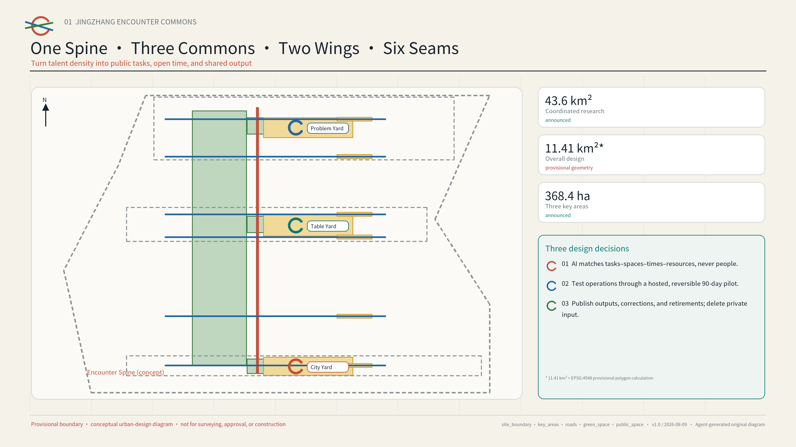
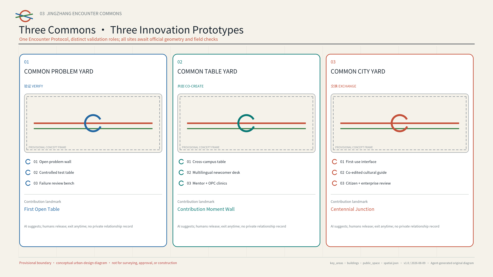
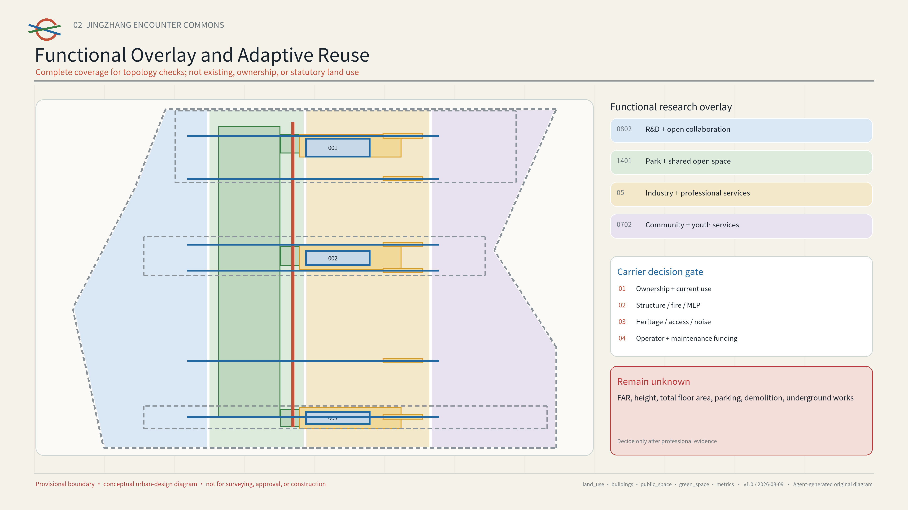
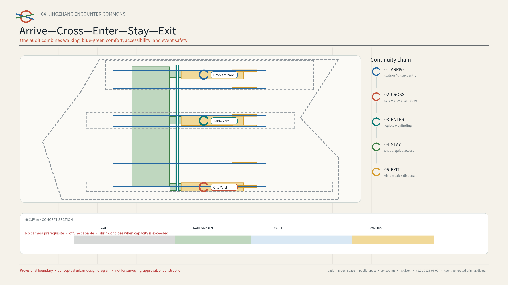
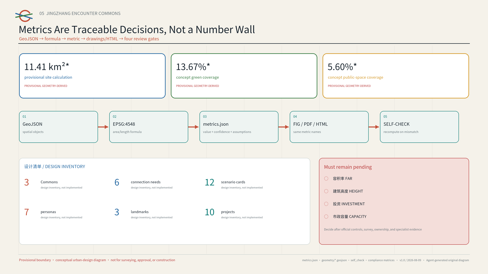

JINGZHANG ENCOUNTER COMMONS / 京张相遇公地
A social-infrastructure proposal for global young AI talent: one Encounter Spine, three Commons, and twelve reversible scenarios. AI matches public tasks, open spaces, time slots, and shared resources—never private relationships.
JINGZHANG ENCOUNTER COMMONS / 京张相遇公地
Let dense talent create meaningful connections. AI lowers the cost of encounter; people decide whether to travel together.
Design Basis and Source List
This proposal translates “a high-quality district desired by global AI innovators” into a testable urban-design question. Talent is already dense, yet public problems, available spaces, open time slots, and collaboration resources are fragmented across organisations and interfaces. Haidian’s official material describes the Beijing AI Origin Community as friendly to entrepreneurship, encounter, and growth. Another official report identifies narrow social circles and insufficient emotional support among young technology workers and documents the “Future Relationship Lab” initiative. A 2026 mobile talent-service station provides a local public-service baseline. The proposal therefore designs social infrastructure rather than a friendship product: AI reduces the cost of discovering public tasks and common resources, while each person decides whether to participate.来源 来源
Evidence follows three tiers. The official announcement, public Agent taskbook, repository standards, and Haidian government pages define objectives, scope, and local baseline. Six primary-source city or district cases supply transferable mechanisms only. The proposal’s concept layers, metrics, and operating assumptions are design recommendations. Publisher, link, intended use, rights status, and limitations are recorded in sources.json; every uncertain condition is registered in assumptions.json.来源 标准
The repository currently contains no official precise polygon for the overall design area or the three key areas. geometry/site_boundary.geojson and geometry/key_areas.geojson reuse the organiser-provided provisional rough geometry and explicitly state official_boundary=false. Grey dashed outlines support composition, checking, and provisional area calculations only; they are not official redlines, road boundaries, property lines, or approval evidence. The announced 43.6 km², approximately 11.4 km², and 368.4 ha are brief figures. The value 11,412,825.386 m² is the EPSG:4548 calculation of the provisional polygon; the two must not be conflated as a precise statutory area. All layers, ratios, and drawings must be recomputed when official geometry becomes available.来源 [assumption:A-BOUNDARY-001]
Every spatial action is a “conceptual recommendation, reference scheme, or item for professional deepening.” The package makes no final determination on FAR, building height, retain-renovate-demolish decisions, road or rail alignments, municipal capacity, investment, ownership, approval, or development sequence. Proposed events are not government commitments, and no private, internal-enterprise, or unpublished planning data are used.标准 深度
Three-Level Scope Framework
The three levels form a strategic–system–prototype progression rather than three disconnected drawing sets. The 43.6 km² coordinated research area links universities, research institutions, enterprises, communities, and regional innovation resources. The approximately 11.4 km² overall design area translates those connections into public-space, walking, service, and operating networks. The 368.4 ha key-area scope tests three replicable encounter prototypes. Announced figures of 192.1 ha for Zhongzhiyuan, 104.3 ha for the AI Origin Community, and 72.0 ha for Dazhongsi organise the tasks; provisional rectangles must not be interpreted as parcel boundaries.来源 深度
The overall structure is “One Spine, Three Commons, Two Wings, Six Seams, Twelve Scenes.” The Encounter Spine organises a sequence of public spaces along the Jingzhang corridor. The three Commons are the Common Problem Yard at Zhongzhiyuan, Common Table Yard at AI Origin, and Common City Yard at Dazhongsi. The two wings are the Zhongguancun Technology Service Wing and Xiaoyuehe Scenario Enablement Wing. Six conceptual east–west seams test road, campus, park, and accessibility discontinuities. Twelve scenarios can be launched at small scale, evaluated, and retired. This is not a new infrastructure corridor or statutory structure; it is an operating map that places tasks, spaces, times, resources, and accountable hosts on one interface.空间数据 指标

An open ledger closes the loop across all three levels. The coordinated level publishes verifiable public problems and resources. The overall level registers candidate spaces, open hours, accessibility, and safety conditions. The key-area level runs controlled pilots. Each pilot produces a public output, retrospective, and retirement record before replication, revision, or archiving. A node without field survey, ownership coordination, fire-safety review, and professional confirmation remains only a candidate.[assumption:A-SITE-VERIFY-001] 深度
Coordinated Research Area: Industry and Future City Research
The proposal defines an AI innovation ecosystem as the coordination of seven shareable inputs, not as a company list: public problems; people and mentors; test spaces; compliance and IP services; compute and tools; first-use settings; and public feedback. Zhongzhiyuan focuses on full-stack technology and controlled validation. AI Origin focuses on cross-campus talent, venture translation, and public services. Dazhongsi focuses on first use, civic feedback, and cultural communication. The Zhongguancun wing supplies legal, IP, finance, and talent services; the Xiaoyuehe wing supplies community, ecological, and public-service problems. Every resource call has an accountable person, time limit, and exit condition so the ecosystem cannot become an event stack without deliverables.来源 深度
Six primary-source cases form a transferable mechanism library. Their scale, authority, and commercial models are not copied:
| Case | Primary mechanism | Jingzhang transfer | What is not copied |
|---|---|---|---|
| Singapore Punggol Digital District | Education, industry, community, and a living lab in proximity | Link campuses, firms, and city tests through public problems | Development intensity or platform vendor |
| Helsinki Varaamo | One interface to discover and reserve public rooms and equipment | Candidate space–time–facility ledger | Any assumption that local spaces are already authorised |
| Seoul Community Space | Search, programme discovery, and registration across public/private shared spaces | Let operators publish genuinely available time slots | A historical space count as a current fact |
| Paris Quartier Jeunes | Youth employment, rights, health, culture, and shared work in one welcoming place | Account-free equivalent service entry at the Common Table | Institutional staffing or service commitments |
| MIT Kendall Square | Research, housing, retail, culture, open space, and community input | Connect innovation display to everyday life | Ownership, development, or university governance models |
| Paris UrbanLab | Real-condition pilots that can stop or pivot | A test–review–scale/exit gate | Treating a concept pilot as an approved project |
Together, the cases reveal a planning innovation: scarce urban resources include not only area but also accessible time, legible invitations, trusted hosts, and preserved public outputs. The space ledger therefore records more than square metres: public/reservable/restricted status, accessibility, noise and capacity, data need, host, maintainer, and exit route.来源 来源
The original identity combines an “open ring” with twin Jingzhang rails. Two trajectories meet at a circle with a visible gap, signifying voluntary entry and exit at any time. Origin Blue represents trustworthy services, Signal Orange an open invitation, Park Green public space, and Rail Grey the historic base. The primary names are 京张相遇公地 and JINGZHANG ENCOUNTER COMMONS; sub-brands are COMMON PROBLEM YARD, COMMON TABLE YARD, and COMMON CITY YARD. No corporate mark, portrait, or third-party image is used.标准 [assumption:A-BRAND-001]
Overall Design Area: Urban Renewal and Regulatory-Plan-Level Urban Design
Renewal follows the sequence “open protocol first, lightweight component second, professional works later.” First, audit usable hours and access conditions of existing indoor and outdoor space. Second, create a visible fifteen-minute encounter interface with movable tables, clear wayfinding, shade, lighting, temporary power, and accessibility infill. Third, only where actual use, public feedback, and professional survey support it should qualified teams study buildings, roads, municipal systems, or permanent landscape works. This tests demand and operating capacity without presuming large-scale demolition or construction.标准 深度
land_use.geojson is a four-part functional research overlay covering the provisional overall area. It represents conceptual coordination among innovation R&D, public green space, industrial services, and community support; it is neither existing land use nor statutory zoning. buildings.geojson contains three envelopes for adaptive-reuse candidate carriers requiring site verification, not a building survey or a retain-renovate-demolish decision. Development intensity, total floor area, height, and parcel boundaries remain unknown pending statutory controls, ownership, survey, and professional capacity evidence.空间数据 [assumption:A-CONTROLS-001]
Four decision labels are reserved for later deepening: retain and share time; adaptive-reuse candidate; temporary activation; and pending assessment. A label may advance only after field survey, structural and fire safety, accessibility, heritage, noise, operator, maintenance, and ownership checks. Demolition is never a default action. Transport and rail work covers walking transfers, crossing waits, and event-day operations only—not road redlines, bridges, tunnels, underground works, or track alignment. Municipal work prioritises reversible power, network, lighting, and edge-device interfaces; capacity and energy claims await specialist calculations.深度 深度
Detailed Design of Key Areas
The three key areas share one Encounter Protocol but perform different roles in the innovation cycle. Each has a public entry, controlled validation mode, visible public output, and exit-oriented landmark. Provisional boundaries show relative position only; professional teams must select final locations within official geometry and verified field conditions.空间数据 深度
Zhongzhiyuan Common Problem Yard. “Publish the problem before recruiting the technology.” Communities, districts, and public-service organisations frame public problems as bounded task cards. R&D teams test models, robots, or tools in an isolated setting, and a host decides whether a result can enter limited first use. Spatial prototypes include an open problem wall, reconfigurable test tables, a separated demonstration strip, and a failure-review bench. The landmark “First Open Table” displays only the problem, validation conditions, and public output—not firm rankings or private relationships. Every model or robot test still requires separate safety, data, and operating approval.[assumption:A-TEST-001]
AI Origin Common Table Yard. Proposed as the first ninety-day, low-cost pilot, it combines a cross-campus table, mentor clinic, OPC compliance clinic, multilingual newcomer desk, and talent/public-service navigation. People may view activities without an account and register on site. AI recommends from public task tags, capacity, language, and time; a host must confirm before publication. The pilot collects no face, contact list, precise trajectory, emotional state, or private-relationship data and never predicts “who should know whom.” The “Public Contribution Moment Wall” records shared documents, fixes, translations, tests, and retirement decisions only.来源 指标
Dazhongsi Common City Yard. It brings R&D outputs into legible first-use and feedback settings through co-edited cultural guides, evening public demonstrations, explainable intelligent-native consumption experiences, and citizen/enterprise retrospectives. The spatial prototype includes a closable display interface, quiet feedback table, accessible viewing area, and visible night boundary. The “Centennial Junction” links a verifiable Jingzhang railway timeline with Zhongguancun’s open-collaboration culture using original graphics; history is not a technology decoration. Every evening opening, commercial event, noise condition, fire arrangement, and heritage question requires event-specific approval.来源 [assumption:A-HERITAGE-001]

AI Innovation Ecosystem, Personas, and AI+ Scenarios
Personas represent a current task and access barrier, never a persistent relationship profile. Seven types are used: a student or young researcher seeking cross-campus collaboration; a first-time/OPC founder needing a compliance path; an engineer needing a real problem; a resident or community group seeking public participation; an international newcomer needing multilingual entry; a frontline operator responsible for safety and service; and a mobility- or sensory-impaired visitor needing continuous access and quiet participation. A person may change roles between tasks, and no persona is used to score, rank, or infer sensitive traits.来源 指标
All twelve scenario cards share the fields public problem, candidate space, open time, required resource, minimum data, human release, public output, and exit condition. The first three are industry test/validation scenarios; the remaining nine embed technology in everyday public service instead of creating another mandatory app.
| ID | Scenario and users | AI’s limited duty | Space/time | Human gate, output, and exit |
|---|---|---|---|---|
| S01 | Open Problem Table: teams and communities | Match problem tags, tools, and free slots—not people | Zhongzhiyuan, weekday noon | Problem owner confirms; test brief; delist without owner |
| S02 | Multilingual Host Agent: newcomers | Translate public agenda and draft plain-language summary | AI Origin, fixed newcomer hours | Bilingual host reviews; public Q&A; revert on mistranslation |
| S03 | Event Access/Risk Assistant: operators and disabled visitors | Check capacity, time, accessibility, and risk list | All Commons, before/after events | Site lead releases; retrospective; cancel if safety fails |
| S04 | Cross-campus Project Clinic: students/researchers | Recommend table session by public topic and equipment | AI Origin, weekends | Institution/venue confirms; next-step list; expire in 30 days |
| S05 | Mentor Hour: first-time founders | Organise public questions and optional services | Rotating service-wing point | Mentor confirms; anonymous topic note; no private-chat storage |
| S06 | OPC Compliance Clinic: small teams | Navigate public policy, IP, and service entry | AI Origin, booked slot | Professional explains; not legal advice; withdraw stale material |
| S07 | Talent and Health Service Navigation: youth/newcomers | Multilingual search of public services; no diagnosis | Common Table, account-free | Staff reviews; links/checklist only; no health record retained |
| S08 | Public Test-Partner Call: R&D teams/citizens | Turn validation conditions into a legible invitation | Controlled Zhongzhiyuan area | Ethics/safety review; public result; no start without approval |
| S09 | Community AI Co-design: residents/groups | Cluster anonymous issues and show disagreement | Xiaoyuehe wing | Community host confirms; preserve minority views; delete raw text |
| S10 | Co-edited Cultural Guide: visitors/cultural workers | Check public sources and draft multilingual copy | Dazhongsi, day/evening | Cultural specialist signs off; traceable version; withdraw disputes |
| S11 | Evening Open Demo: engineers/citizens | Draft plain-language explanation and Q&A queue | Dazhongsi, limited hours | Host/venue releases; public feedback; stop if noise limit fails |
| S12 | Annual Encounter Week: all users | Aggregate public tasks and accessible event schedule | Three Commons, annual candidate | Joint curators confirm; output index; new permission each edition |
All three test Agents “recommend but do not decide.” A public catalogue enters retrieval; a rule engine first filters permission, accessibility, capacity, and freshness; the model explains a ranking only among eligible options; a host releases the result. No permanent personal account is required by default. One-time registration tokens are deleted after retrospective, and public outputs are stored separately from private raw input. Walk-in, telephone, and human service remain equivalent; refusing AI never reduces eligibility.标准 指标
Land Use, Building Scale, and Retain-Renovate-Demolish Strategy
The land-use language follows two rules: do not invent statutory classes, and do not represent a design overlay as existing conditions. Four complete-coverage polygons use allowed repository codes for innovation R&D, green/open space, industrial service, and community support. Their widths are a topologically complete conceptual partition, not planning conditions. Three building envelopes compare three cost paths—sharing existing time, lightweight adaptive reuse, and temporary outdoor components. Their areas are concept-polygon calculations, not surveyed building footprints.标准 空间数据

The retain-renovate-demolish decision table activates only in professional deepening: ownership/current use; structure/fire/MEP; heritage/character; all-weather accessibility; operator and maintenance funding; and evidence from at least one complete pilot cycle. Until all six are present, the status is “pending assessment.” Permanent new buildings, height, FAR, above/below-ground scale, and parking supply remain unknown. Massing on the A3/A0 material illustrates component scale and interface only.[assumption:A-SITE-VERIFY-001] 深度
The component library includes an open table, movable host station, quiet seat, wheelchair turning bay, multilingual e-ink sign, temporary shade, closable power/network box, public contribution card, and exit marker. Each must be maintainable, replaceable, and useful offline. Sensors are not default components; any attendance estimate first uses manual time samples and non-identifying totals.[assumption:A-DATA-001] 指标
Transport, Rail, Municipal Infrastructure, and Public Services
The Encounter Spine is a public-space and programme concept, not a new road or rail line. Six east–west connections use a five-stage audit—arrive, cross, enter, stay, exit—to test continuous walking surfaces, legible wayfinding, safe waiting, an accessible alternative, night lighting, and a visible way out. One north–south line and six cross-lines in roads.geojson express intentions requiring field verification. Any crossing of a major road, railway, campus, or controlled district requires separate transport, engineering, ownership, and safety study.空间数据 深度
Rail stations are service-transfer interfaces, not alignments editable by this proposal. Candidate actions are continuous, legible directions from exits to the Commons; staggered dispersal; walking/cycle-parking guidance; pre-checked accessible routes; and a rule to close or shrink an event under crowd pressure. Live footfall, video surveillance, and individual trajectories are not prerequisites. Any future lawful aggregate-data connection requires data-protection, minimisation, and purpose review.[assumption:A-ACCESS-001]
The municipal/digital base follows “small ports, hard boundaries”: closable power and network interfaces, an offline-readable event list, mirrored public-service links, device-health logs, and a human master switch. Paper task cards, human hosts, and fixed service desks preserve basic operation when AI fails. Edge devices collect no biometric identity, do not reuse tokens across events, and do not require vendor lock-in.来源 标准
Blue-Green Network, Public Space, and Urban Character
The blue-green strategy does not add technology objects to parks; it treats ecological comfort as a precondition for encounter. The concept green layer tests continuous shade, rain alternatives, seat spacing, quiet areas, and night boundaries. The public-space layer contains three Commons and open-table candidates. Green and public-space ratios are computed from provisional design polygons and express concept-layer coverage only—not existing green ratio, regulatory control, or implementation commitment.空间数据 深度

The three pilgrimage landmarks celebrate contribution rather than celebrity photography. The First Open Table remembers the moment a problem becomes public. The Centennial Junction links Jingzhang’s connective history to open collaboration in Zhongguancun. The Public Contribution Moment Wall records shared outputs, major corrections, and failures deliberately retired. The honour system displays only authorised public contribution names, with an anonymous option; it never displays relationships, spending, financing, or algorithmic ranking.来源 指标
The cultural story runs “from rails connecting geography to open collaboration connecting knowledge.” Wayfinding uses short bilingual text, one numbering system, and reachable placement. The district logo identifies the corridor; three Commons icons identify functions, and the two are not conflated. Urban-character principles are public legibility, restrained day/night expression, reversible installations, visible heritage, and visible failure. Material, colour temperature, advertising, and shopfront rules require heritage, city-management, and professional design work.[assumption:A-HERITAGE-001] 深度
Renewal Projects, Implementation Policy, and Phasing
Ten projects form a “mechanism before space” package: P01 public problem and space-time ledger; P02 ninety-day AI Origin Common Table; P03 controlled Zhongzhiyuan Common Problem test; P04 Dazhongsi first use and feedback; P05 accessibility/safety audit of six connections; P06 multilingual newcomer desk; P07 rotating OPC and mentor clinics; P08 three landmarks and contribution archive; P09 monthly City Problem Table and quarterly Cross-campus Open Day; and P10 annual Encounter Week. Each has a candidate accountable party, prerequisite, minimum output, public retrospective, and stop rule. No fiscal allocation or delivery party is presumed.空间数据 指标
| Phase | Concept window | Priority projects | Gate to advance | Stop/revert condition |
|---|---|---|---|---|
| 1 Validate | 0–90 days | P01, P02, P05, P06 | Named operator; site, safety, access, and data review; public retrospective | No operator, material safety/privacy issue, or no offline equivalent |
| 2 Network | 4–12 months | P03, P04, P07, P09 | Two stable cycles; executable cross-organisation protocol; complaint/maintenance loop | Exclusionary participation, maintenance failure, or no demonstrable benefit |
| 3 Embed | After 12 months | P08, P10 and any justified permanent deepening | Independent professional/public support; clear ownership, funds, and approval | Site or statutory conditions do not support it; annual review retires it |
Long-term operation uses four seats: a Public Problem Seat validates issues; a Space Operation Seat decides capacity, time, and safety; a Data and Ethics Seat reviews minimum data, model boundary, and deletion; and a Youth and Community Seat can veto exclusionary design. Monthly City Problem Tables, quarterly Cross-campus Open Days, and annual Jingzhang Encounter Week are proposed brands only. Host, date, budget, and scale require approval and partnership agreements.[assumption:A-OPERATIONS-001] 深度
The conversion path is “public problem → controlled test → limited first use → resident/professional review → replicate, revise, or archive.” Success is not registration or connection count; it is public-task completion, cross-organisation output, accessible equivalent participation, complaint resolution, on-time deletion, and effective voluntary exit. A scenario without public output for two cycles, or with maintenance beyond operator capacity, must shrink or close.指标 [assumption:A-COST-001]
Metrics, Area Recalculation, and Compliance Matrix
Metrics have three classes. Announced scope figures are approximately 43.6 km² coordinated research, approximately 11.4 km² overall design, and 368.4 ha across three key areas. Recomputable provisional-geometry values include site-polygon area, concept green/public-space coverage, candidate building-envelope area, and Encounter Spine length. Design-inventory counts include three Commons, six connections, twelve scenarios, seven personas, three landmarks, ten projects, and three phases. Geometry values must be recalculated with any official polygon or layer change; inventory counts update with the proposal version.指标 深度

| Metric | Current status | Interpretation |
|---|---|---|
| site_area_sqm / green_ratio / public_space_ratio | known, medium/low confidence | Mechanically reproducible from submitted provisional/concept polygons; not statutory or existing-condition indicators |
| commons_count=3 / connector_count=6 / scenario_card_count=12 | known design inventory | Completeness checks; no claim that items are built or operating |
| floor_area_ratio / building_height_m | unknown | No official control, survey, ownership, or specialist condition; no guessed value |
| investment_cny / municipal_capacity | unknown | No delivery body, engineering design, price basis, or professional assessment |
| Pilot outcomes | baseline pending | Formula only; evaluate after lawful, voluntary, minimum data become available |
Five core figures, nine GeoJSON files, the A3 booklet, A0 boards, bilingual offline HTML, narrative, and three compliance/standard/depth matrices share the same metric names. metrics.json records formula, source file, confidence, and assumptions; self_check.json stores deterministic, spatial, visual, and professional-evidence checks. A discrepancy is repaired by recalculation and regeneration, never by editing one display number.空间数据 指标
Risk, Copyright, and Compliance
The highest ethical risk is turning “encounter” into interpersonal profiling, dating matching, or surveillance. This proposal prohibits recommendations based on face, contact list, precise trajectory, emotion, health, ethnicity, religion, sexual orientation, or social relationship. It processes only actively submitted public tasks, language, accessibility need, time, and resource preferences. Defaults are short-lived tokens, expiry deletion, human hosting, explainable suggestions, and an account-free equivalent. Any future data processing requires separate legal and security assessment.[assumption:A-DATA-001] 标准
Spatial risks include provisional-boundary error, ownership, campus/district access, heritage, fire, noise, crossings, and municipal capacity. Precision is reduced to transferable node types; Phase 1 is limited to reversible events and field survey; bridges, underground space, permanent buildings, and road changes go to specialist deepening. Technical risks include hallucination, mistranslation, bias, vendor lock-in, and outage; mitigations are linked sources, human sign-off, offline lists, rule-first filtering, and replaceable interfaces.来源 深度
Equity measures include offline equivalent access, free basic participation, accessible seats, multilingual and plain-language text, quiet sessions, a community veto seat, and no ranking by spending or funding. Operating risk is reduced by small pilots, one accountable owner per item, maintenance funding before launch, two-cycle review, and explicit retirement. risk.json rates eight dimensions from 1–5 with mitigation and human-review routes.空间数据
The declared Agent generated the text, original graphics, design GeoJSON, HTML, and PDF. Public facts come only from official or primary pages registered in sources.json. Figures contain no third-party basemap, photograph, trademark, remote font, or remote script. Noto Sans SC is used under its open licence only as rasterised glyphs or a PDF subset; no font file is distributed. Rights and limitations are detailed in report/copyright_statement.md. The COMMUNITY-DISPLAY-ONLY front-matter licence is not the same as the intellectual-property terms of the separate institutional qualification route.来源
References
Core references are the public announcement of the Haidian Branch of the Beijing Municipal Commission of Planning and Natural Resources; the repository’s public taskbook and site package; Haidian government pages on AI Origin, youth practice, and talent services; and primary pages from Singapore JTC, the Cities of Helsinki, Seoul and Paris, and MIT. Full URLs, access dates, uses, and limitations are in sources.json. No copyrighted image or lengthy source text is reproduced.来源 来源
Five evidence entry points organise the package: provisional scope and key areas in geometry/site_boundary.geojson and geometry/key_areas.geojson; design overlays and nodes in geometry/land_use.geojson and spatial.json; calculations in metrics.json; task traceability in compliance_matrix.json; and gaps/risks in risk.json and assumptions.json. Before submission, the package is rerendered, finalised, self-checked, and preflighted against the latest main branch. Any official-polygon or rule change triggers whole-package recomputation; old diagrams are never treated as official conclusions.来源 空间数据